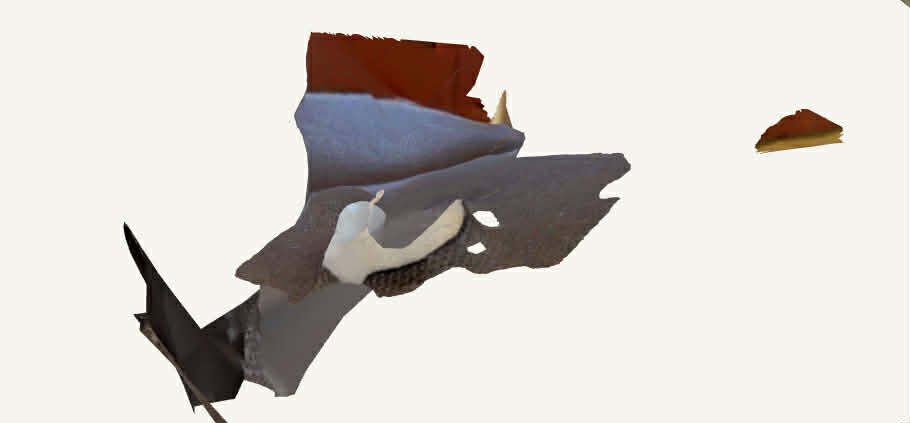
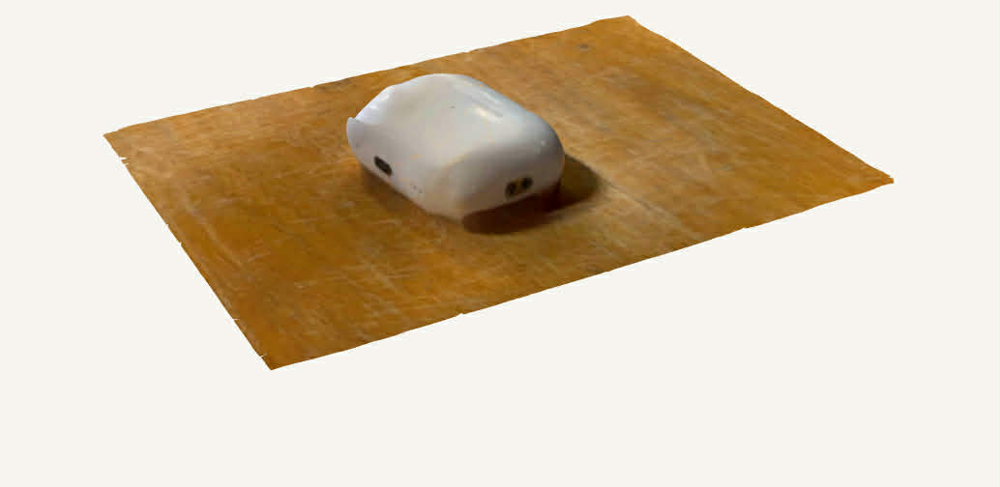
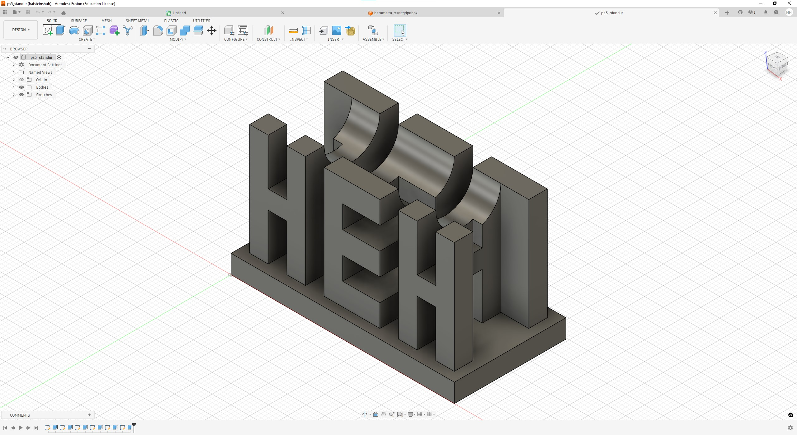
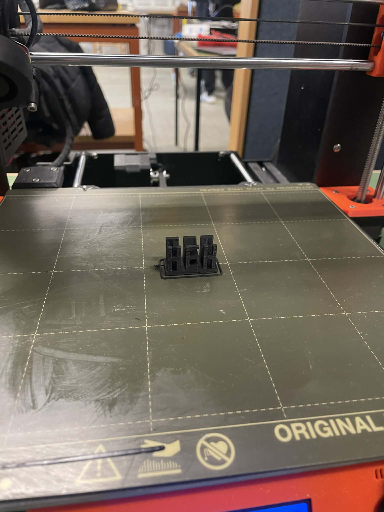
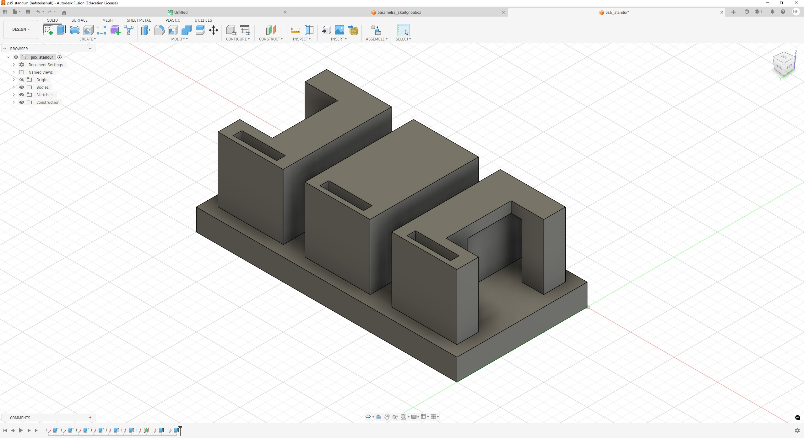
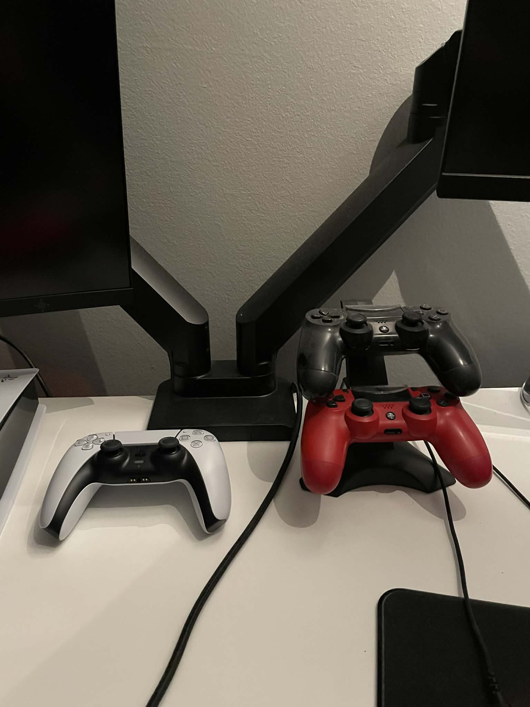
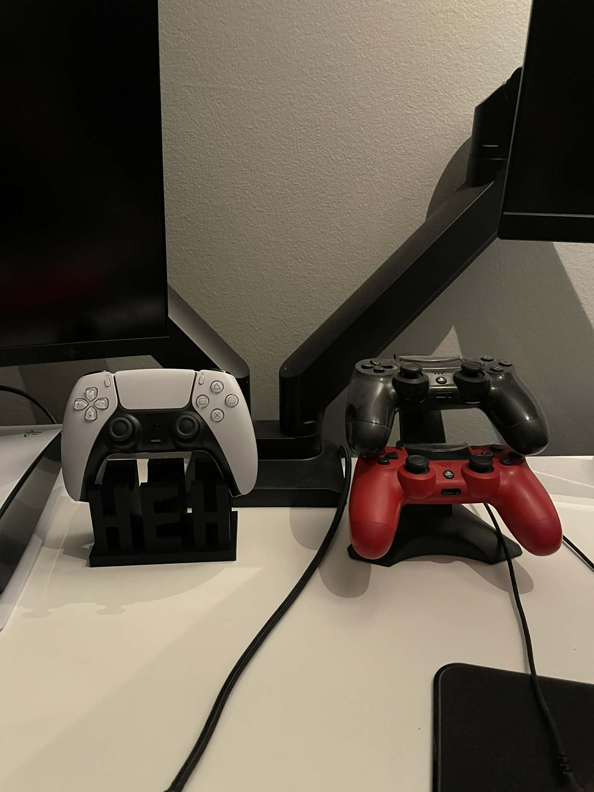

Verkefni 3 – 3D prentun og skönnun
Lýsing á verkefni
Markmið verkefnisins var að kynnast 3D skönnun og 3D prentun og skilja hvernig hægt er að færa raunverulegan hlut yfir í stafrænt þrívítt líkan. Verkefnið var tvískipt og þurfti skönnunin og 3D prentunin ekki að tengjast. Líkt og í hinum verkefnunum byrjaði ég á að horfa á leiðbeiningamyndband frá kennara um verkefnið og ráðleggingar.
3D skönnun
Ég ákvað að byrja á skönnun og urðu AirPodin mín fyrir valinu. Til að skanna notaðist ég við forritið Polycam: 3D Scanner & Editor sem ég hlóð niður í símann minn. Forritið var einfalt í notkun en fyrsta skönnunin heppnaðist ekki rosalega vel og erfitt var að greina hvað var í raun verið að skanna.

Eftir fyrstu tilraunina ákvað ég að breyta um bakgrunn, finna betri lýsingu sem speglaðist ekki jafn mikið af og vanda mig sérstaklega að halda símanum stöðugum. Niðurstaðan var strax betri eins og sést á myndinni en samt ekki nóg of góð.

AirPods er frekar erfiður hlutur til að skanna þar sem hulstrið er lítið og mjög glansandi, sem veldur ónákvæmri mynd. Til að fá enn betri og skýrari niðurstöðu ákvað ég að skanna aðeins stærri hlut sem glansaði ekki alveg eins mikið og Airpodsin. Ég ákvað því að prófa skanna besta drykk í sögunni. D-Vítamín bætta Léttmjólk og var niðurstaðn rosalega góð og má sjá efst á síðunni.
3D prentun
Í 3D prentuninni hannaði ég stand fyrir PS5 fjarstýringuna mína með HEH sem er skammstöfunin mín. Ástæðan fyrir því að ég valdi að prenta stand var sú að fjarstýringin mín hefur setið ofan á PlayStation tölvunni minni frá því ég keypti hana. Þar sem ég á stand fyrir PlayStation 4 fjarstýringarnar mínar þurfti ég að gera stand fyrir PlayStation 5 fjarstýringuna því það lítur betur út.

Ég byrjaði á að gera fullklárað útgáfu og þar sem engar teikningar var að finna mældi ég sjálfur fjarstýringuna og hannaði standinn út frá því. Næst skalaði ég svo teikninguna í 1:4 af stærð standsins í Fusion til að prófa formið og sjá hvort hugmyndin virkaði í prentun. Það sem ég var helst að skoða var hvernig overhangið á E-inu myndi koma út og hvort ég þyrfti að bæta við stuðning einhverstaðar. Útkoman af sköluninni kom mjög vel út og overhangið leit rosa vel út og bridge á H-inu líka.

Til að prenta teikninguna þurfti ég að hlaða niður Prusa Slicer. Þegar forritið var klárt importaði ég STL skrána af standinum úr Fusion, valdi rétta gerð af prentara og breytti stillingum. Mikilvægast var að velja PLA filament, 15% infill og 0.20 mm laghæð til að hraða prentuninni. Síðan ýtti ég á slice. Prusa Slicer lét mig þá bæta við "support on build plate only" þar sem forritið vildi ekki prenta án þess. Þegar ég var búinn að gera allt klárt exportaði ég svo skránni sem g-code og sett það á SD kort.

Áður en ég prentaði tók ég hinsvegar eftir að standurinn væri yfir þyngdarhámarkinu sem er 100 grömm ásamt því að hægt er að rökræða að standurinn sé ennþá smíðanlegur með frádráttar framleiðslu þó að nánast ómögulega væri. Til að slá tvær flugur í einu höggi ákvað ég að gera falin göng á nokkrum stöðum í standinum og stöfunum og fór þá standurinn úr 102 grömmum í 98 grömm


Útkoman heppnaðist mjög vel. Overhangið kom vel út og fjarstýringin situr örugglega á standinum. Ef ég myndi prenta standinn aftur myndi ég gera hann aðeins breiðari til að koma fjarstýringunni enn betur fyrir.